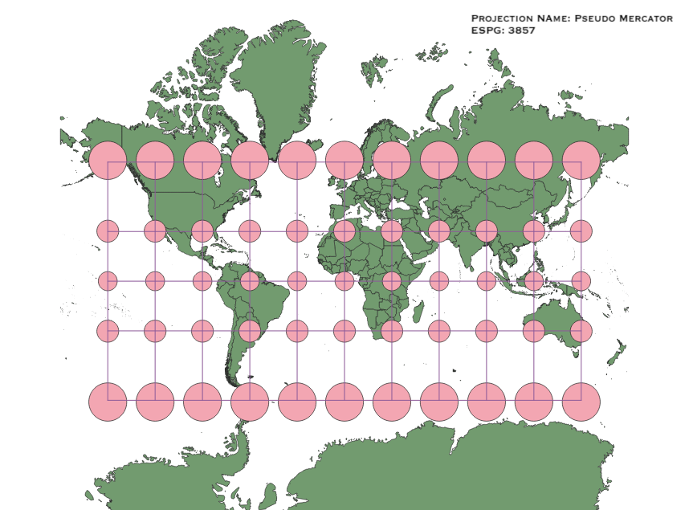
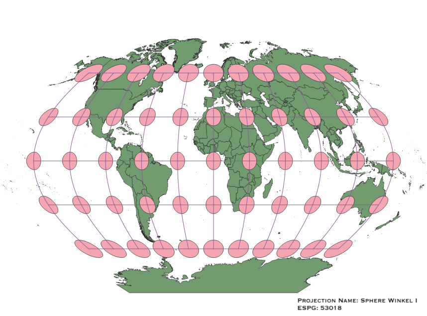
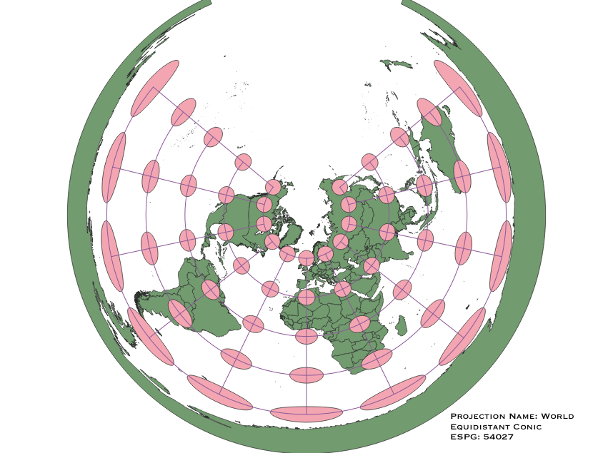
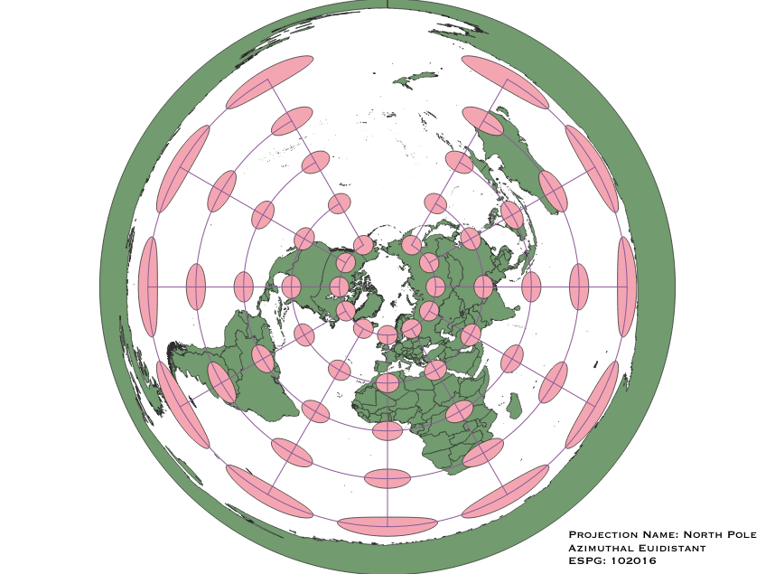
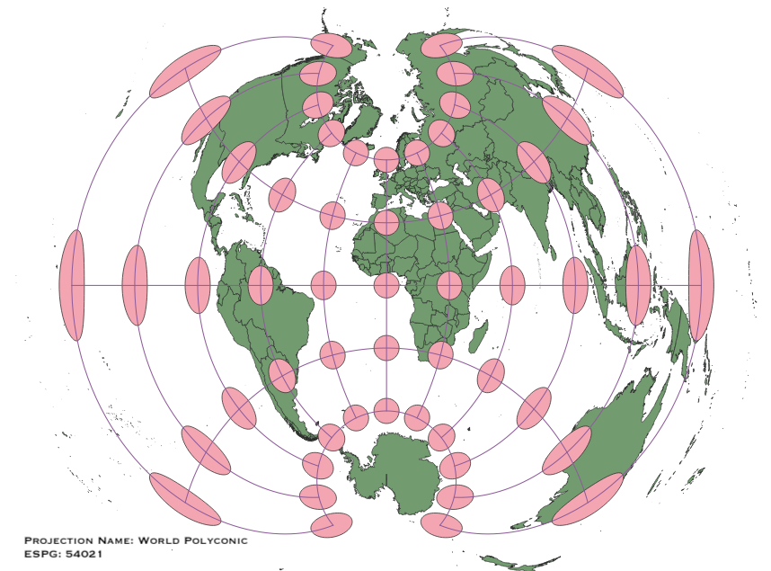

In this project I learned how to display images in different projections
I used the Natural Earth dataset to create the base map, and then using the Indicatrix plugin, I added an indicatrix layer to the basemap.
Finally, I created maps by changing the CRS (Coordinate Reference System) in QGIS and trying out different world projections.
WGS84 Projection
Standard projection used for GPS, Google Maps, and other webmaps.
Based on the indicatrix, this projection is distorted in both shape and size
as the distance from the equator increases.

Aitoff Projection
Based on the indicatrix, this projection distorts size and shape the farther away
a location is from the prime meridian or the equator.

Pseudo Mercator Projection
Pseudo Mercator Projection is similar to the
Mercator projection, except that the projection is done using a sphere instead of an ellipsoid. It preserves shape
throughout the map; however size is distorted the farther a location is from the equator.

Sphere Winkel I Projection
This projeciton compares in some ways to the Aitoff projection. However, it's distortion does not appear to be as
dramatic as the distortion in the Aitoff projection because while the Sphere Winkel I still distorts size the farther away
a location is from the equator or the prime meridian, it does not distort shape in a noticable way.

Cylindrical Equal Area World Projection
This projection is interesting because it appears to preserve both shape and size in the central regions of the map,
but a dramatic distortion is both shape and size is observable in the northernmost and southernmost regions.

World Equidistant Conic Projection
This projection preserves both size and shape in the areas surrounding the North Pole; however, as locations near
the South Pole both size and shape are greatly changed.

North Pole Azimuthal Equidistant Projection
This projection does not differ too gratly from the World Equidistant Conic Projection because based on the indicatrix,
the least distorted areas are still those surrounding the North Pole. Nevertheless, the shape distortion near the South Pole in this azimuthal projection
is even more pronounced than in the aforementioned conic projeciton.

World Polyconic Projection
In this projection shape and size are best preserved near the equator and the prime meridian; however, interestingly
this projeciton appears to preserve the size and shape of points surrounding both poles that are closest to the prime meridian.

Sphere Two Point Equidistant Projection
Based on the indicatrix, it appears that this projection preserves shape for the most part except maybe in the easternmost,
westernmost, and southernmost areas. Size on the other hand in distorted most in areas farthest form the prime meridian and the equator, although size
appears to be more uniform north of the equator than south of the equator, meaning the North Pole is less distorted than the South Pole.

Data used for this project
Download Natrual Earth 1:10m Cultural Vector